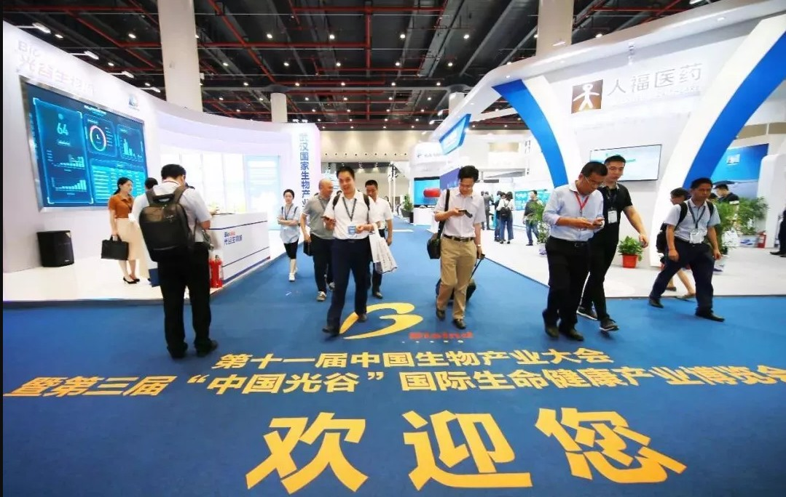
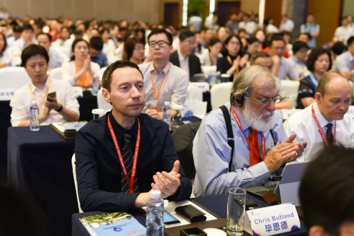
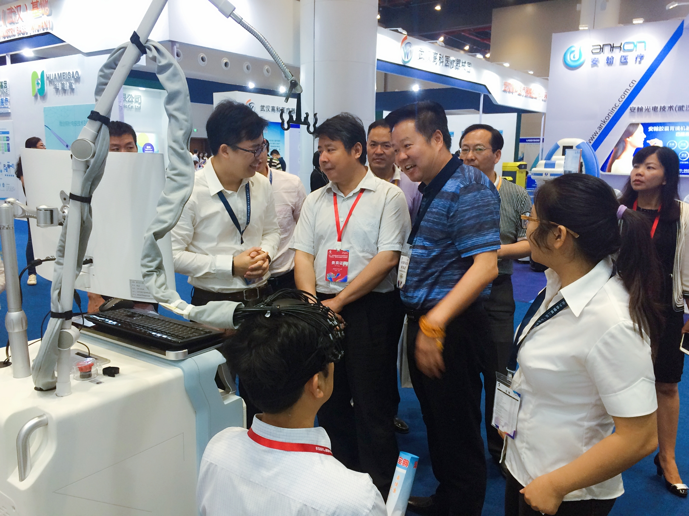
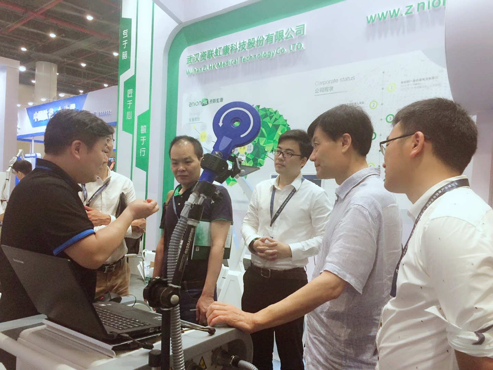

2018年5月25日，第十一届中国生物产业大会暨第三届“中国光谷”国际生命健康产业博览会在武汉光谷科技会展中心成功开幕，来自海内外的专家、学者、嘉宾及企业参加了此次大会。
该次大会是在国家发改委和十余家国家部委的大力支持下，由中国生物工程学会等生物领域最具代表性和权威性的十多家国家级学会、协会联合国家生物产业基地及所在省政府共同主办的，是我国生物产业领域规模最大、层次最高、影响最广的年度盛会。作为中国脑科学技术产业化先锋，武汉资联虹康荣耀参会。
 以研究脑，认识脑，保护脑为核心的“脑计划”已经在全球范围内如火如荼地展开，武汉资联虹康洞悉国内外脑科学研究现状，率先提出并推进脑科学技术产业化，做脑科学技术产业化的先锋。
借此次国际生命健康产业博览会，资联虹康向全国乃至全球神经科学领域，展示了国内领先的脑检测、治疗、评估技术。会上，公司围绕脑科学技术创新、科研成果的市场应用化进行介绍，扩大了脑科学技术产业化的宣传。
 资联虹康专注脑科学领域，以创新为驱动，是国内将脑神经科研成果向市场应用转化的先驱。多年以来，资联虹康本着“专于脑、匠于心、敏于行”的初心，在脑科学领域默默耕耘，研发并生产的多款产品已服务百万精神和神经疾病患者，临床效果显著。
本次参会的设备全部基于自主知识产权研发，涵盖脑科学与神经康复医学领域，包括近红外脑功能成像系统、经颅磁刺激及智能机器人导航系统、光学导航系统、经颅直流电刺激系统、微电流刺激仪等多款产品，对抑郁、失眠、头痛、焦虑等神经性和精神性疾病有良好的治疗效果。
产品在现场吸引了包括众多省级和生物办领导、生科专家和学者、媒体朋友等在内的各界人士视察、指导、参观和体验，广受好评。
领导们不仅对公司产品表现出高度的赞誉，更对“专于脑、匠于心、敏于行”的经营理念表示极大的认可，指出，这才是一个有价值、有责任、有担当的企业。
来自湖北卫视、《楚天都市报》、《香港商报》的媒体朋友对公司的产品也表现出较高的兴趣，认为这是将专业科研成果向市场输出的重要成果，在精神健康问题日益被重视的今天，脑科学技术产业化和市场化对脑疾病患者而言具有不可估量的价值。
脑科学是生命科学中最复杂，也是人类目前尚未完全攻克的一块阵地。 资联虹康立足脑神经科学领域，立志成为中国最优秀的脑检测、治疗、评估的技术引领者，打造国际一流的脑健康产业生态链。
资联虹康感谢莅临展位的各位领导、专家、媒体及同仁给予的关心和支持，我们将不忘初心，砥砺前行，紧随脑科学技术发展的最前沿，坚定不移的持续推进脑科学先进技术的快速产业化，为人类大脑健康贡献新的力量。